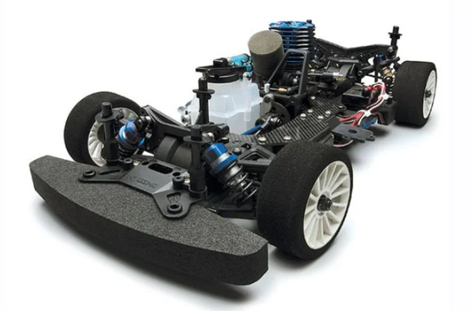

京商 FW-05RR

引用元画像：rcscrapyard.net
📋 基本情報
| メーカー | 京商（Kyosho） |
|---|---|
| 機種名 | FW-05RR（PureTen GP） |
| シャーシ略称 | FW-05RR |
| 型番 | 31583（Foam Tire Special）、31583-TUP（with Sirio S 12 TUP EVO-2 5-Port Engine）、31584（Kyosho Cup Edition） |
| 発売時期 | 2004年 |
| 価格 | 詳細不明 |
| 生産状況 | 生産終了 |
| カテゴリー | ラジコンカー（1/10スケール GPツーリングカー） |
| サブカテゴリー | 4WD ツーリングカー（エンジン、フォームタイヤ仕様） |
| シリーズ | PureTen GP シリーズ |
📏 シャーシスペック
| 全長 | 詳細不明 |
|---|---|
| 全幅 | 詳細不明 |
| 全高 | 詳細不明 |
| ホイールベース | 詳細不明 |
| トレッド | 詳細不明 |
| タイヤ幅/径 | フォームタイヤ仕様 |
| フレーム | アルミプレートシャーシ |
| 全備重量 | 詳細不明 |
⚙️ 駆動系
| 駆動方式 | シャフトドライブ4WD |
|---|---|
| デフギヤ | ギヤデフ（フロント・センター・リア） |
| ギヤ比 | 詳細不明 |
| ギヤピッチ | 詳細不明 |
| トランスミッション | アルミプレートシャーシベース |
| ドライブシャフト | ドッグボーンドライブシャフト＋プロペラシャフト |
| エンジン | .12クラスGPエンジン（別売） ※31583-TUPモデルは Sirio S 12 TUP EVO-2 5-Port Engine 付属 |
🔧 サスペンション
| 形式 | 4輪ダブルウィッシュボーン独立懸架 |
|---|---|
| サスアーム | 詳細不明 |
| ダンパー | コイルスプリング＋オイルダンパー×4本 |
| アンチロールバー | 標準装備（フロント・リア） |
| ステアリング | 詳細不明 |
💡 特徴
世界チャンピオンV-ONE RRRのアップグレードを継承
- 2004年発売のFW-05RRは、世界チャンピオンマシンV-ONE RRRシャーシから多数のアップグレードパーツを継承
- FW-05シリーズの最高峰モデル
- 競技向けの本格的なレーシングシャーシ
フォームタイヤ仕様（Foam Tire Special）
- フォームタイヤ専用設計（31583）
- 高グリップフォームタイヤで高速コーナリング可能
- ラバータイヤよりも路面追従性が高い
複数のモデルバリエーション
- Foam Tire Special（31583）- フォームタイヤ専用モデル
- with Sirio S 12 TUP EVO-2 5-Port Engine（31583-TUP）- 高性能エンジン付属
- Kyosho Cup Edition（31584）- 京商カップ専用モデル
競技向けの本格シャーシ構成
- V-ONE RRRからのアップグレードパーツ多数採用
- 3つのギヤデフ搭載（フロント・センター・リア）
- アンチロールバー標準装備で安定したコーナリング
- オイルダンパーで路面追従性向上
- フルボールベアリング仕様
FW-05シリーズとの互換性
- FW-05S、FW-05Tと多くのパーツを共有
- パーツ流用により修理の可能性向上
🔧 ぽすとそに工房での修理実績
修理難易度
★★★★★（非常に困難）
希少なシャーシかつパーツ供給が極端に少ないため、修理は非常に困難です。FW-05S、FW-05Tとのパーツ互換性を活用する必要があります。
よくある故障・注意点
- オイルダンパーのオイル漏れ（Oリング劣化）
- ギヤデフのギヤ摩耗（定期的なグリスアップ必要）
- ドライブシャフトの摩耗・破損
- シャーシのクラック（衝撃による）
- ボールジョイントの緩み・脱落
- .12クラスエンジンのメンテナンス必須
- フォームタイヤの劣化（保管方法に注意）
修理のポイント
- FW-05S、FW-05Tの互換パーツを活用
- V-ONE RRRのパーツも一部流用可能
- オイルダンパーのOリング定期交換
- ギヤデフのグリスアップ（ZX1オイルまたはテフロンオイル推奨）
- ドライブシャフトはチタン製への交換推奨
- ボールジョイントは定期的にチェック・交換
- アルミシャーシは修正困難なため取り扱い注意
その他の特徴
- 絶版機種のため入手困難
- 専用パーツの新品入手はほぼ不可能
- 中古パーツや互換パーツで対応する必要あり
- FW-05シリーズの中でも最も希少なモデル
- V-ONE RRRのアップグレードを受けた競技向けモデル